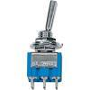
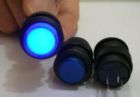

I'd like to have some visual feedback on the state of the fysical buttons. Just like you can see the position of o potentiometer. Simple pushbuttons don't provide that feedback. So I was thinking about the following two options:
1. A 3-pole switch like this:

Simple pushbuttons connect to VDD and a digital GPIO in (pulldown) of GPIO and GND (pull-up). The question is how to wire this 3 pole switch to a GPIO pin. I would guess that I only need to connect two poles and then treat it like a "normal-on" pushbutton, and connect to GPIO dig in and GND.
2. A pushbutton in combination with a led, where the led signifies the on or off state. Like so:

I tried placing a led (plus a small resistor) in series with the pushbutton (between GPIO dig in and VDD). It was glowing very faintly, hardly seeable. So not working. Is this possible and if so how do I wire it up?
I looked in the hardware forum but didn't see any clues.
How to connect hardware A-B switch
I don't have an answer but I'd like to know what those buttons are. (Building a Midibox and need buttons).
You can connect a 3-pole switch the same way as a pushbutton. Mid terminal to VDD, other terminals can be connected to a digital input like PA1, PA2, … Use one terminal for a toggle, or two terminals for a real switch.
If you want an LED to show the state of the button, you need to connect it in another way: LED and 220 Ohm resistor should be connected between the terminal from the switch and GND.
Basic circuit diagrams for switches and LEDs can be found over here: https://sebiik.github.io/community.axoloti.com.backup/t/official-pin-out-ports-documentation/202/11
Thanks! So:
1. A real A-B switch will cost me two GPIO-ports? Thats not very economical and might force me to construct the patch with normal 2-pole buttons.
2. Do you mean like this (S2)
How many Potentiometers / Buttons?
Picture is from here: http://www.plasmaled.com/led-switches-c-6_63/8-led-switches-blueredgreen-p-35.html
But you can find them everywhere, just google "led switch".
If you want hardware A/B switching, it will indeed use two ports. Best to use only one port + mux objects in your patch.
Diagram for the switch + LED looks ok.
That's a SPDT switch. https://learn.sparkfun.com/tutorials/switch-basics/poles-and-throws-open-and-closed
Just ignore one pole.
Easiest is to use one gpio input for the pushbotton switch.
And one gpio output to drive the LED.
In the patch, use gpio/in/digital -> logic/toggle -> gpio/out/digital
Doing both the LED and button with a single gpio, it is possible but requires an object that does not exist yet, to switch the gpio between input and output at a high rate (so you don't see it is actually blinking).
Surely you can hook up an LED and resister in parallel after the "On" pins. Pressing on will trigger the GPIO and also light the LED. No need for digital back out.
Connection cf my drawing S2 works: push button = led on. Johannes, might this draw too much current and do any arm to the components? Because you say it is not possible.
Oh I guess your pushbutton is latching and not momentary? I was assuming you want to use a momentary button + led to make a "virtual" latching button. No worries about overcurrent in your diagram.
I was considering a "real" latching button. I understand now why a "virtual" latching button needs 2GPIO's. Thanks for clarifying.
Hi,
I was wondering if such an object would have been written in the meanwhile. Would be very handy in the project I am working on!
Keep up the good work, Tnx!